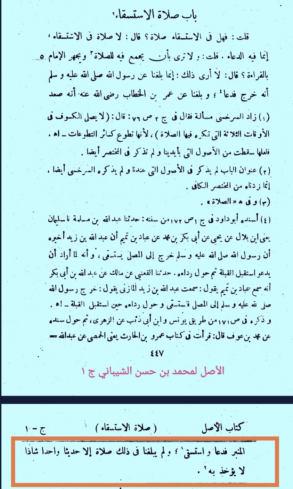
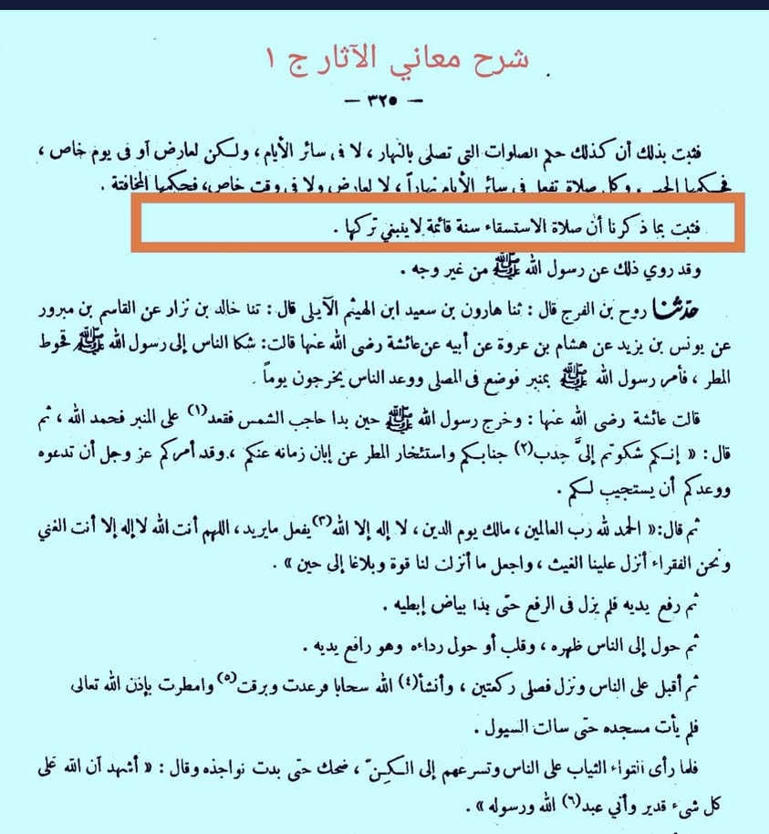

ইমাম আবু হানিফা রাহ. কেন বললেন “সালাতুল ইস্তিসকা’- বৃষ্টি প্রার্থনার কোনো নামাজ নেই।’
২৬ এপ্রিল, ২০২৪
ইমাম আবু হানিফা রাহ. কেন বললেন “সালাতুল ইস্তিসকা’- বৃষ্টি প্রার্থনার কোনো নামাজ নেই।’
এর সহজ উত্তর হল, ইমামে আজমের নিকট সালাত সংক্রান্ত সহিহ হাদিসগুলো পৌঁছে নি। যেগুলো পৌঁছেছে, সেগুলোতে কেবল দোআ ও ইস্তিগফারের কথা এসেছে। যে কারণে তিনি জামাআতের সহিত ইস্তিসকার সালাতকে সুন্নাহ মনে করতেন না। তবে কেউ একাকী পড়লে বৈধ বলে মত দিয়েছেন।
‘ইস্তিসকার সালাত সংক্রান্ত সহিহ হাদিস তাঁর নিকট পৌঁছে নি’ দাবিটি আমার মনগড়া নয়। ইমাম মোহাম্মদ রাহ. আবু হানিফা থেকে নকল করেছেন। আবু হানিফা রাহ. বলেন—
ولم يبلغنا في ذلك صلاة إلا حديثا واحدا شاذا لا يؤخذ به.
এ বিষয়ে সালাতসংক্রান্ত কোনো বর্ণনা আমাদের নিকট পৌঁছে নি; তবে একটি শাজ-বিচ্ছিন্ন হাদিস পৌঁছেছে, যা গ্রহণযোগ্য নয়। [আল আসল, মোহাম্মদ— ১/৪৪৮]
কোনো কোনো বিদ্বেষী লোক এ কথা প্রচার করছে যে, আবু হানিফা ‘সালাতুল ইস্তিসকা’ বেদআত বলেছেন। (নাউজুবিল্লাহ) এটি ইমামের নামে নির্জলা মিথ্যাচার। তিনি বেদআত বলেন নি; শুধু ‘নামাজ নেই’ বলেছেন, এটুকুই।
তবে আবু হানিফার প্রধান দুই শিষ্য আবু ইউসুফ রাহ. ও মোহাম্মদের মতে ‘সালাতুল ইস্তিসকা’ সুন্নাহ। পরবর্তী হানাফি উলামা এ মতই গ্রহণ করেছেন।
ইমাম আবু জাফর তাহাবি হানাফি রাহ. বলেন—
أن صلاة الاستسقاء سنة قائمة لا ينبغي تركها.
“সালাতুল ইস্তিসকা’ একটি প্রতিষ্ঠিত সুন্নাহ। একে তরক করা অনুচিত।’ [শরহু মা'আনিল আছার— ১/৩২৫]
উপর্যুক্ত আলোচনা থেকে তিনটি বিষয় প্রমাণিত হয়:
(১) ইমাম আবু হানিফা রাহ. সর্বদা সহিহ হাদিসের ওপর আমল করতে সচেষ্ট ছিলেন। اذا صح الحديث فهو مذهبي
(হাদিস বিশুদ্ধ হলে সেটিই আমার মাজহাব) তার প্রসিদ্ধ উক্তি। যে কারণে ইস্তিসকার সালাতের বর্ণনা তার নিকট শাজ হওয়ায় তিনি তা পরিহার করেছেন।
(২) ইমাম আবু হানিফা রাহ. সহিহ হাদিসকে ইচ্ছাকৃতভাবে পরিহার করেন নি; হয়ত হাদিস তাঁর নিকট বিশুদ্ধ সনদে পৌঁছে নি বা সহিহ হাদিসকে তিনি মানসুখ মনে করেছেন কিংবা অন্যকোনো মুখালিফ হাদিস বিদ্যমান ছিল। প্রভৃতি যৌক্তিক কারণে পরিহার করতে হয়েছে।
(৩) হানাফি মাজহাব মানেই ইমাম আবু হানিফার রায় নয়। হানাফিরা ইমাম আবু হানিফার অন্ধ মুকাল্লিদ নয়। বরং, পরবর্তী মুহাক্কিকগন তাহকিক শেষে তাদের নিকট বিশুদ্ধ মতকেই হানাফি মাজহাবের ফতোয়া হিসেবে নির্ধারণ করেছেন। ফলে অনেক ক্ষেত্রে রায় ইমাম আবু হানিফার বিপক্ষে গিয়েছে৷ যার প্রমাণ ফিকহের কিতাবাদিতে ভুরিভুরি।
কিন্তু, হানাফিফোবদের এসব বুঝানো মুশকিল। বিদ্বেষ হক বুঝার ও মানার ক্ষেত্রে প্রধান বাধাগুলোর একটি। আল্লাহ আমাদের সহিহ সমঝ দান করুন। বিদ্বেষ পরিহার করার তাওফিক দিন।

